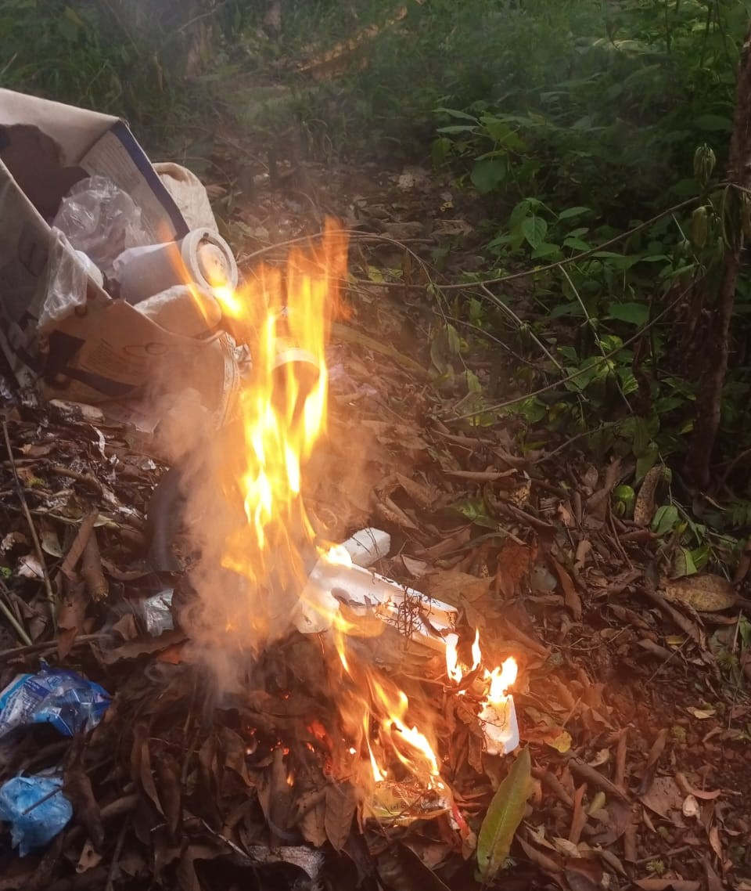

Air Pollution
what is air pollution

Air pollution consists of gases,liquids, or sollids present in the atmosphere in high enough levels to harm humans, other prganisms, or materials.
There is no such place, where the air can be found entirely pure and uncontaminated.
what is the main cause of air pollution
- Transportation: Vehicles, particularly those fueled by gasoline or diesel, emit exhaust gases containing pollutants such as nitrogen oxides, carbon monoxide, and particulate matter.
- Industrial emissions: Factories and power plants release various pollutants, including sulfur dioxide, nitrogen oxides, and particulate matter, during the production and combustion of fuels.
- Agriculture: Agricultural activities, such as livestock farming and the use of fertilizers, can release ammonia and methane, which contribute to air pollution.
- Residential heating and cooking: The burning of wood, coal, and other fossil fuels for heating and cooking purposes releases particulate matter and other pollutants into the air.
- Natural processes: Some air pollutants, like dust, pollen, and spores, are released through natural processes like wind erosion, plant growth, and decay.
- Waste management: Landfills, waste incineration, and open burning of waste can release hazardous substances, including dioxins and heavy metals, into the atmosphere.
- Deforestation and land-use changes: Removing trees and vegetation can lead to reduced air quality due to decreased absorption of pollutants and increased exposure to pollutants from other sources.
how does air pollution affect us
Humans:
- Respiratory Problems: Polluted air can cause or exacerbate respiratory diseases such as asthma, bronchitis, and emphysema.
- Cardiovascular Issues: Air pollution is linked to heart diseases and strokes.
- Cancer: Some air pollutants, such as benzene and formaldehyde, are known carcinogens.
- Reduced Lung Function: Long-term exposure to air pollution can lead to reduced lung function, especially in children.
- Pregnancy Complications: Pregnant women exposed to air pollution may have a higher risk of preterm birth, low birth weight, and birth defects.
- Neurological Effects: There's evidence suggesting air pollution can contribute to neurological problems, including cognitive decline and Alzheimer's disease.
- Allergies: Air pollution can worsen allergies and make people more sensitive to allergens.
- Mortality: Long-term exposure to polluted air is associated with increased mortality rates.
Animals:
- Respiratory Issues: Animals, especially those living in urban areas, can suffer from respiratory problems due to polluted air.
- Decreased Reproductive Success: Pollutants can affect reproductive success in animals, leading to fewer offspring and genetic abnormalities.
- Habitat Destruction: Air pollution can damage ecosystems and habitats, affecting the food chain and biodiversity.
- Behavioral Changes: Some studies suggest that air pollution can alter animal behavior, affecting feeding patterns, migration, and reproduction.
- Direct Toxicity: Animals may ingest or inhale pollutants directly, leading to poisoning and death.
- Impact on Aquatic Life: Air pollutants can settle on water bodies, causing pollution in rivers, lakes, and oceans. This affects aquatic life, leading to fish kills and disrupting entire ecosystems.
Plants:
- Reduced Crop Yield: Air pollution can damage plants, reducing crop yields and affecting agricultural prodtivity.
- Weakened Immune Systems: Pollutants can weaken plants' immune systems, making them more susceptible to diseases and pests.
- Disrupted Photosynthesis: Some pollutants interfere with photosynthesis, reducing plants' ability to produce food.
- Leaf Damage: Ozone, a common air pollutant, can cause damage to plant leaves, affecting their growth and overall health.
Overall Environmental Impact:
- Climate Change: Air pollutants such as carbon dioxide contribute to global warming and climate change.
- Acid Rain: Pollutants like sulfur dioxide and nitrogen oxides can lead to acid rain, damaging soil, water bodies, and vegetation.
- utrophication: Nitrogen pollution from the air can lead to eutrophication of water bodies, causing algae blooms and disrupting aquatic ecosystems.
- Ozone Depletion: Some air pollutants contribute to ozone depletion, which affects the ozone layer's ability to protect life on Earth from harmful UV radiation.
How to reduce air pollution
- Promote clean energy: Encourage the use of renewable energy sources like solar, wind, and hydroelectric power to replace fossil fuels, which are primary contributors to air pollution.
- Improve public transportation: Invest in efficient, clean public transportation systems to reduce the number of vehicles on the road, thereby decreasing emissions.
- Support energy-efficient practices: Encourage energy-efficient practices in homes and businesses, such as using LED lights, energy-efficient appliances, and proper insulation.
- Plant more trees: Trees act as natural air filters by absorbing pollutants and releasing oxygen. Planting more trees and preserving green spaces can help combat air pollution.
- Reduce waste: Properly manage waste by recycling, composting, and reducing single-use plastics, which can help decrease emissions from waste treatment facilities.
- Support cleaner fuel standards: Advocate for stricter fuel emission standards for vehicles and industries to reduce the amount of pollutants released into the air.
- Encourage carpooling and bike riding: Promote carpooling and bike riding as alternatives to single-occupancy vehicles to decrease the number of cars on the road.
- Monitor and regulate industrial emissions: Implement strict monitoring and regulation of industrial emissions to minimize pollution from factories and power plants.
- Raise awareness: Educate people about the sources and effects of air pollution and inspire them to take action in their daily lives.
- Support global efforts: Participate in or support international agreements and initiatives aimed at reducing air pollution, such as the Paris Agreement on climate change.